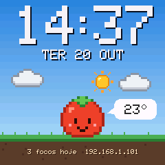
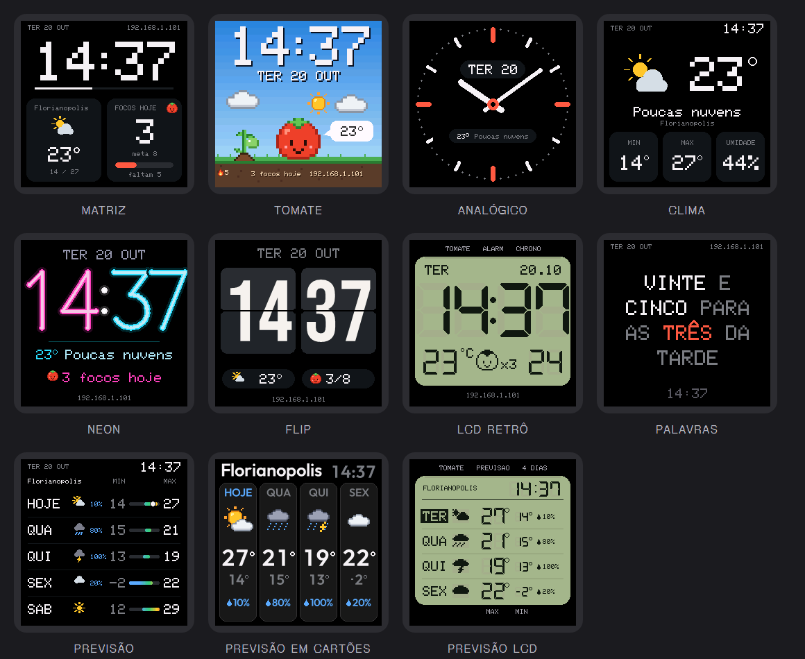
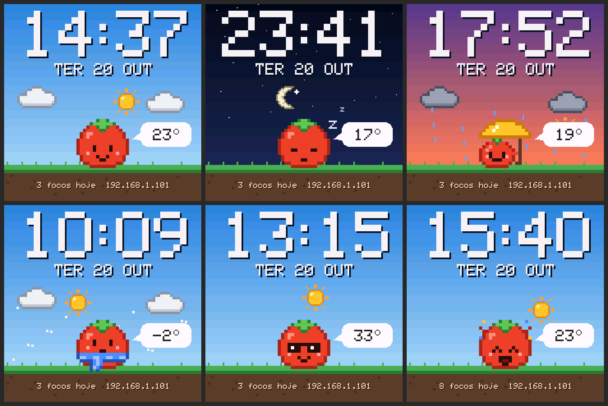
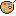
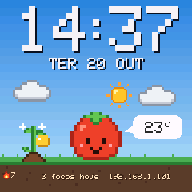
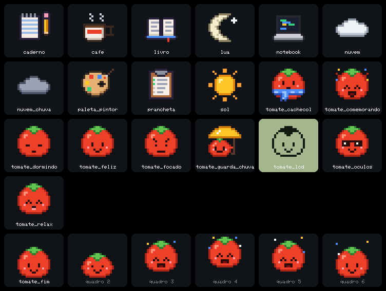

Your SmallTV Ultra with Pomodoro, new clock faces and a tomato.
New firmware for the GeekMagic SmallTV Ultra desk clock: hand-drawn clock faces, a Pomodoro timer with a pixel art mascot, weather with no API key and a simple web panel for your phone.

What it is
The clock: GeekMagic SmallTV Ultra
A tiny Wi-Fi desk cube with a 240×240 color screen. Inside there is an ESP8266 (the same chip found in many home automation projects) and an ST7789 display. Out of the box it shows time, weather and photos, running GeekMagic's closed firmware.
The firmware: SmallTV Pomodoro
A new program for the same device, written from scratch and open on GitHub. You flash it from the clock's own web panel, like a regular update, and it gets new clock faces, a Pomodoro timer and a tomato mascot. Photos already stored on it stay there.

New clock faces to install
Besides the 8 built-in faces, there is a gallery of faces that don't ship with the firmware: Bento, Synthwave, Terminal, Aquarium, Station and more. Each one is a small file the clock installs without reflashing.
What changes from the factory firmware
Same hardware. What changes is what runs on it.
Features
It all fits in under 500 KB and runs on the clock itself. Screens and panel in Portuguese, English or Spanish.
8 clock faces
Matrix, Tomato, Analog, Weather, Neon, Flip (with a real flipping animation), Retro LCD and Words (the time spelled out).
Pomodoro with a mascot
The tomato focuses, relaxes with a coffee on breaks, sleeps while the timer is paused and jumps for joy when a phase ends.
Focus activity
Pick what you're doing in the panel: reading, studying, coding, chores or drawing. The screen shows the activity's object next to the tomato.
Weather
From Open-Meteo, no sign-up or API key. In the rain the tomato opens an umbrella; in the cold it wears a scarf; in the heat, sunglasses.
Photos and GIFs
Uses the album already on the clock. New photos go through the panel and are cropped to 240×240 automatically.
Night brightness
Set a schedule to dim the screen at night so it doesn't light up the bedroom.
Web panel
Open the IP shown on the screen from your phone or computer: faces, Pomodoro, photos and settings, including screen color and rotation. In Portuguese, English or Spanish.
Focus game
Day streaks with the goal reached, a plant that grows into the golden tomato, a yearly garden, 10 achievements and a shareable day card. See the game.
One-tap updates
When a new version is out, the panel tells you and updates the clock with one tap (from v1.8). You can also upload a .bin and go back to the original firmware.
Up close
The clock's screens, rendered by the project's simulator with the same code as the firmware.

Focus: the red ring fills up until the end of the phase, with the countdown and the end time. The tomato concentrates next to the activity's object. (sped up)
In the panel you pick the focus activity, and its object shows up next to the tomato:
ReadStudyCodeChores
Draw

How to install
It takes about 5 minutes, with no cable and no software on your computer: everything happens in the browser.
SmallTV Pomodoro
.bin file to upload from the clock's panel.
-
Download the firmware
Get the
.binfile from the button above. -
Upload it from the factory panel
Open the IP shown on the clock in your browser, go to Firmware Upgrade, pick the file and upload it. The clock restarts by itself.
Got “ERROR[4]: Not Enough Space”?
The factory update space varies between units. In that case, go through a small loader first:
- Download
smalltv-mod-loader.bin(giovi321/smalltv-mod v2.8.2) and upload it in Firmware Upgrade. - Connect your phone or computer to the open Wi-Fi network
SmallTV-Loader. - Open
http://192.168.4.1/updateand upload the SmallTV Pomodoro firmware.
- Download
-
Connect to Wi-Fi
If the clock doesn't join your network by itself, connect to the
SmallTV-Pomodoronetwork and openhttp://192.168.4.1to choose yours.2.4 GHz networks only.
-
Open the panel
Type the IP shown on the clock's screen into your browser. Pick a face, set your weather city and start a focus session.
Later updates: the panel tells you when a new version is out; or upload the file in Settings → Update firmware.
Going back to the original firmware
Download the official .bin from GeekMagicClock/smalltv-ultra and upload it in the SmallTV Pomodoro panel under Settings → Update firmware (or at /update, user admin).
This works because SmallTV Pomodoro uses the same flash layout as the original and stays under the size limit (about 530 KB). The file system is mounted without automatic formatting: your photos are not erased.